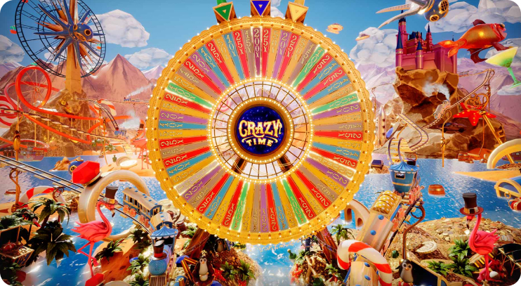

Tips to Maintain Control
Gambling should always be treated as a recreational activity, not a way to make money. When approached carelessly, it can lead to financial and emotional difficulties. To avoid these issues, consider the following principles:
-
Set Limits
Allocate a specific budget for gambling and stick to it. Plan how much you can afford to spend each day and base your gaming strategy on this amount.
-
Avoid Chasing Losses
Trying to recover lost money through risky bets often leads to greater losses. Play within your means and avoid aggressive strategies.
-
Manage Your Time
Decide in advance how much time you want to dedicate to Crazy Time. Limiting sessions to no more than two hours can help maintain a balance between entertainment and responsibility.
By following these simple steps, you’ll be able to enjoy Crazy Time as an exceptional form of entertainment without unnecessary stress or complications.
Recognizing Problematic Behavior
Unsure if gambling is becoming a problem? Ask yourself the following questions:
- Does gambling interfere with your work or studies?
- Have your friends or family criticized your gambling habits?
- Have you lied about the amount of money or time spent on gambling?
- Have you borrowed money from financial institutions to continue playing?
- Do you feel the urge to recover losses immediately after losing?
- Do you use gambling as a way to escape daily problems?
- Does your mood heavily depend on your gambling outcomes?
issues. Seeking professional help from a psychologist or counselor is the best way to reduce the negative effects of gambling.
Self-Monitoring and Support
We are committed to supporting players who face gambling addiction. If needed, you can request to set limits on deposits or temporarily restrict your account access.
Simply email us with your request and explain your situation. Our team will work with you to find a suitable solution.
Age Restrictions
Access to gambling services is strictly limited to adults aged 18 and older, as mandated by law. If underage users attempt to create accounts, their profiles will be blocked.
If you encounter any issues, our support team is available to assist with account-related queries or gameplay concerns.
Legal Gaming Services
Our website provides access to reviews, guides, and statistics for Crazy Time around the clock. This popular live game is always available for those ready to explore its exciting features.
To play Crazy Time for real money at a licensed casino, you must:
- Complete the registration process with accurate details to ensure smooth access to your account.
- Confirm you are legally allowed to gamble. If you have been advised against gambling, it is better to avoid this activity.
- Fund your account using popular payment methods. Monitoring your balance is easy via the personal account dashboard.
These simple steps allow you to enjoy the game safely and responsibly.
Addressing Gambling Addiction
If you suspect you may have a gambling addiction, seek professional help immediately. Addiction is a serious condition and should not be ignored. Left untreated, it can lead to severe financial, emotional, and social consequences. Contact a specialist to take the first step toward recovery.